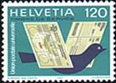
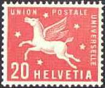
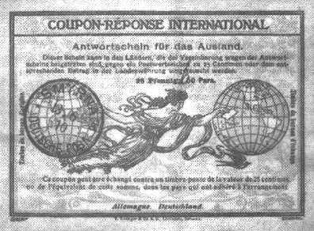
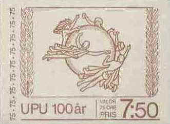
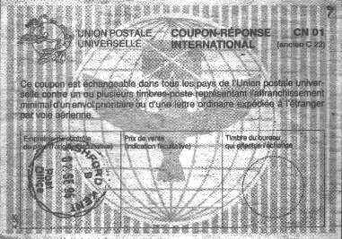
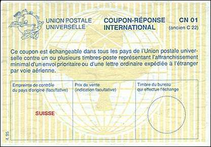

 |
Collecting IRCs (International Reply Coupons ) |
 |
The Universal Postal Union was formally established in
1874. Thirty three years later, during the 1906 Congress of the UPU in Rome, the
concept of the International Reply Coupon was agreed upon.
The very first design of IRCs showed an
allegorical female figure, delivering mail from one part of the globe to
another. For exemplification we have taken a 1910 coupon from Germany's offices in
Turkey (see below, on the left). There is an evident resemblance
between the allegorical female figure displayed on this coupon and the
female figures shown of the official UPU-emblem, displayed on this page on
the front cover of a Swedish
booklet, issued in 1974 (below, on the right).
|
 |
 |
The front side of an IRC cancelled at Ashford, Kent, UK (see below, on the left) is shown on the left. On the right you can see a better reproduction of an IRC that wasn't used, with the same design of a bird carrying a letter in its beak, superimposed over the geographic grid of a world globe, with a background of yellow vertical stripes. Another bird, with an IRC as the right wing (and as a postal money order form as the left one), was displayed on a Swiss stamps, issued in 1983 (Scott 9O14, Zumstein X UPU 14) for the official use of the International Bureau of the UPU. You can see it on the top of this page.
|
 |
 |
Since the IRCs were created before the days of
airmail, the earliest coupons could be redeemed for a stamp representing
single-rate ordinary postage to a foreign country.
Most of the IRCs coming into stamp collectors
hands are struck with one postmark showing where and when the coupon was
issued. When the coupon is
taken to the post office to be redeemed, it is postmarked again by the
redeeming postal clerk, who then keeps it and provides the correct amount
of postage. It is possible to
find coupons with two postmarks or blank coupons with no postmark.
George
Kringelbach
& Victor Manta
|
Click the above banner to visit the site |